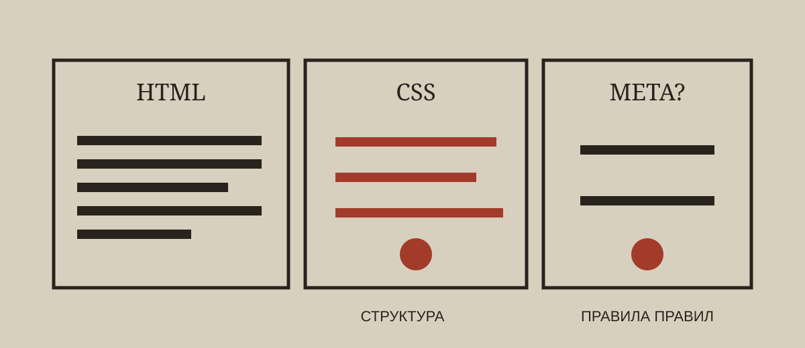

РАССЕЛ · БЕЙТСОН · CSS · ОНТОС
Кто, блядь, написал CSS твоей жизни?
Человек спросил, что такое каскадная таблица стилей. Через двадцать минут выяснилось, что Google управляет не только поиском, Бейтсон работает курьером смысла, а у мышления открыто сорок семь окон без единого правила приоритета.

Книга уже была структурой. Заголовки, главы, абзацы и ссылки: HTML унаследовал древнюю логику организации текста. CSS отделил предъявление от устройства документа.
Рассел и Бейтсон прибыли. Первый разделил логические типы, второй перенёс вопрос уровней в коммуникацию. Веб-браузер добавил работающий механизм выбора среди конкурирующих правил.
Сорок семь окон не являются каскадом. Если интерпретации не имеют ясных отношений и условий завершения, множество метапозиций может не расширять субъектность, а откладывать действие.